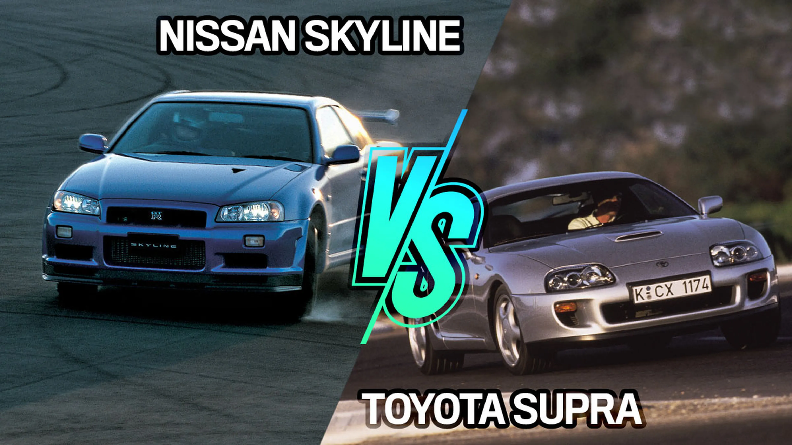

¿Cuales fueron las principales empresas que motivaron esta cultura?
En la decada de los 90 y 2000 varias empresas japonesas fueron adentrandose en el mundo competitivo del automotriz, diseñando las mejores maquinas del mercado basandose en la potencia,fiabilidad y accesibilidad. Dentro de este amplio mercado las principales marcas que destacaron fueron:
- Nissan
- Toyota
- Subaru
- Honda
- Mazda
Estas empresas fueron los principales impulsores de esta moda,no solo en el mundo competitivo si no tambien en las calles.
El acuerdo entre las empresas
Un dato importante que queda en la memoria de muchos amantes de la cultura no solo japonesa si no tambien automotriz, fue el pacto entre los dos principales competidores del mercado en el momento.Nissan y Toyota en la creacion de sus respectivos modelos. Por parte de nissan el Skyline-R34 y por parte de toyota su iconico toyota Supra, ambas empresas recibieron una advertencia por parte del gobierno japones indicando que los autos creados por ambas empresas no podia superar los 280HP y una velocidad maxima de 180km/h. Si bien es verdad que el reglamento se cumplio ambas partes decidieron cubrirse las espaldas en caso tener que aumentar su potencia.
